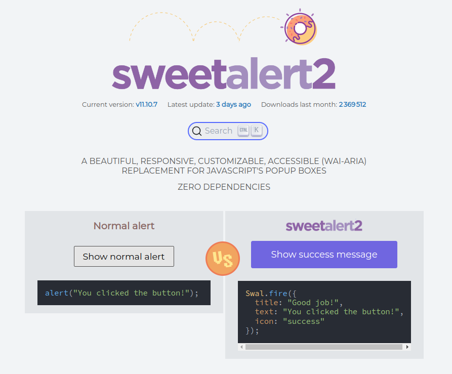
You think that some of the components of {shiny} are not very functional or downright austere? Are you looking to implement some feature in your app but it is not available in the {shiny} toolbox? Take a look at JavaScript!
JavaScript is a very popular programming language that is often used to add features to web pages. With HTML and CSS, JavaScript is an essential language for web developers. The size of its user community means that if you are looking to implement a particular feature, there is a good chance that someone has already had the same need as you and has shared their code!
An other positive point (and essential for us in this case) : it is possible to integrate JavaScript libraries into a {shiny} application to add features that are not available by default. In addition to that, {golem} will help us to set everything up.
No more excuses to back down, let’s go ! 🚀
TL;DR
- Going further in
{shiny}by integrating a JavaScript library is possible!- We take the example of sweetalert2, which allows to display alerts that are more visually appealing than the basic ones
{golem}has several functions to make it easier for us to integrate JavaScript libraries into a{shiny}app- This example is rather simple. The integration of libraries is sometimes harder because the documentation might be scarse or the library might be more complex to use
Import sweetalert2 into a {shiny} app created with {golem}
sweetalert2
- sweetalert2 is a JavaScript library that allows you to display alerts that are more visually appealing than the basic ones
- It is very well documented
- It is very popular (more than 16000 “stars” on GitHub at the time of publication of this article)
Let’s take a look at the possibilities offered by sweetalert2: https://sweetalert2.github.io/
If you click on “Show normal alert”, you will see a classic alert while clicking on “Show success message”, you will see a sweetalert2 alert.
The first one has a rather austere design while the second one is more modern and more pleasant to the eye, it will probably offer a better user experience.
Feel free to play with the different types of alerts offered by sweetalert2 to get an idea of what is possible with this library by visiting the examples section.
Add the necessary dependencies to the {shiny} app
The following sections assume that you have already created a {shiny} app with {golem}.
If this is not the case and you want to know more about {golem}, I invite you to consult the official documentation.
To add sweetalert2 to your {shiny} app, you will need to find a way to incorporate the files needed for its operation into your application.
Two solutions are available to you:
Use a “CDN” (Content Delivery Network) to load the files from a third-party server. The CDN will be the equivalent of a CRAN for JavaScript libraries. Concretely, we will ask our application to point to the sources of sweetalert2, hosted on a remote server.
Download the files needed for its operation and integrate them directly into your application. If your application is intended to be used on a machine that is not connected to the Internet, you will inevitably have to go through this step.
Don’t panic! We will see both methods
Where to find the elements I need?
The sweetalert2 documentation is very well done. You will find all the information you need to integrate the library into your application from the Download section.
However, you will need to learn how to identify the elements you need to integrate sweetalert2 into your application.
Looking for the CDN
In the “Download & Install” section, you will find a link to the sweetalert2 CDN. This is the link that we will have to add to our application in order to use the library.
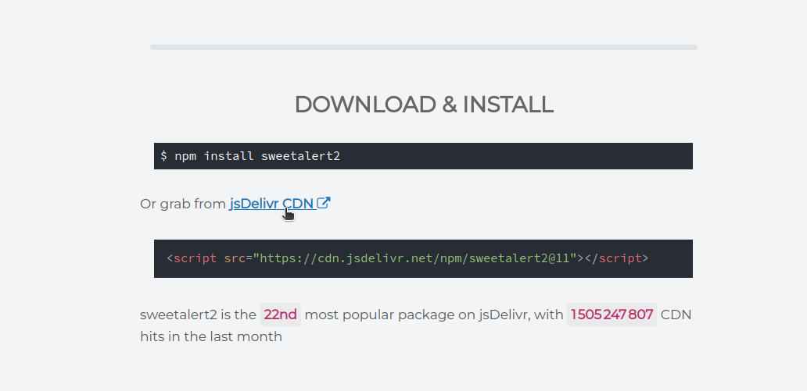
When you click on the link, you will arrive on a page that looks like this:
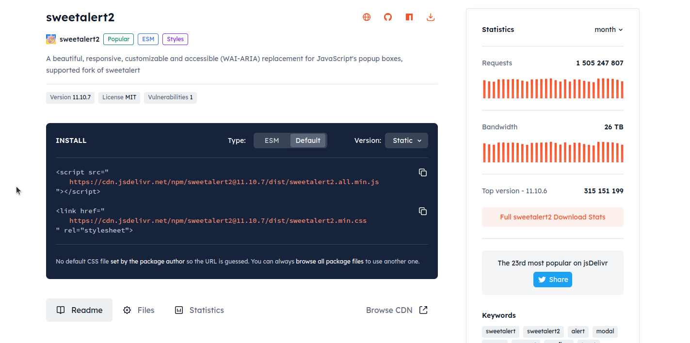
What we are interested in here is the link in the <script> tag and the link in the <link> tag. The link to the file with the .js extension corresponds to the sweetalert2 JavaScript file. The link to the file with the .css extension corresponds to the sweetalert2 styles file.
Copy them and let’s go back to our app!
Method 1: Add dependencies to sweetalert2 via the CDN
Let’s open the R/app_ui.R file of our application and add the two links we copied earlier to the body of the golem_add_external_resources() function.
golem_add_external_resources <- function() {
add_resource_path(
"www",
app_sys("app/www")
)
tags$head(
favicon(),
bundle_resources(
path = app_sys("app/www"),
app_title = "golemsweetalert"
),
# sweetalert2
tags$script(src = "https://cdn.jsdelivr.net/npm/sweetalert2@11.10.7/dist/sweetalert2.all.min.js"),
tags$link(href = "https://cdn.jsdelivr.net/npm/sweetalert2@11.10.7/dist/sweetalert2.min.css",
rel="stylesheet")
)
}We find here a call to tags$script and a call to tags$link corresponding respectively to the <script> and <link> tags seen on the links provided by the CDN.
We copy-paste the elements being careful about the parameter names src, href and rel and remembering to separate them with commas. We are indeed moving from HTML code (where elements are separated by spaces) to R code.
Method 2: Add dependencies to sweetalert2 locally
The links identified earlier will also be useful to download the files needed to use sweetalert2.
The link to the JavaScript file will be passed to the golem::use_external_js_file() function while the link to the CSS file will be passed to the golem::use_external_css_file() function.
To keep a record of this, we will save the following commands in the dev/02_dev.R file in the “External resources” section.
golem::use_external_js_file("https://cdn.jsdelivr.net/npm/sweetalert2@11.10.7/dist/sweetalert2.all.min.js")
golem::use_external_css_file("https://cdn.jsdelivr.net/npm/sweetalert2@11.10.7/dist/sweetalert2.min.css")Both files are now present in the inst/app/www folder of our application project.
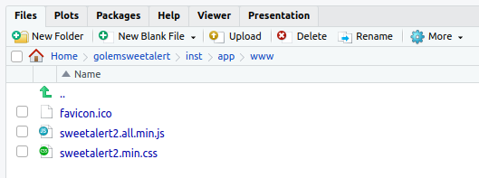
Everything is ok, we can continue our journey 👍.
How to know if sweetalert2 is correctly imported into my {shiny} app?
To check that sweetalert2 is correctly imported into our application, we open our browser and then the development console.
Before that, let’s launch our app with golem::run_dev()!
NB: The following screenshots were taken with the Google Chrome browser.
On the window of our application, we right-click and select “Inspect”. In the new window that opens, we choose the “Console” tab and then type the command Swal.fire("Hello sweetalert2!"). This console allows us to execute JavaScript code, which will be interpreted by our browser.
If everything went well, we should see a sweetalert2 alert appear! Otherwise, we might have an error message in red (which we will have to learn to decipher, as with an R console :-)).
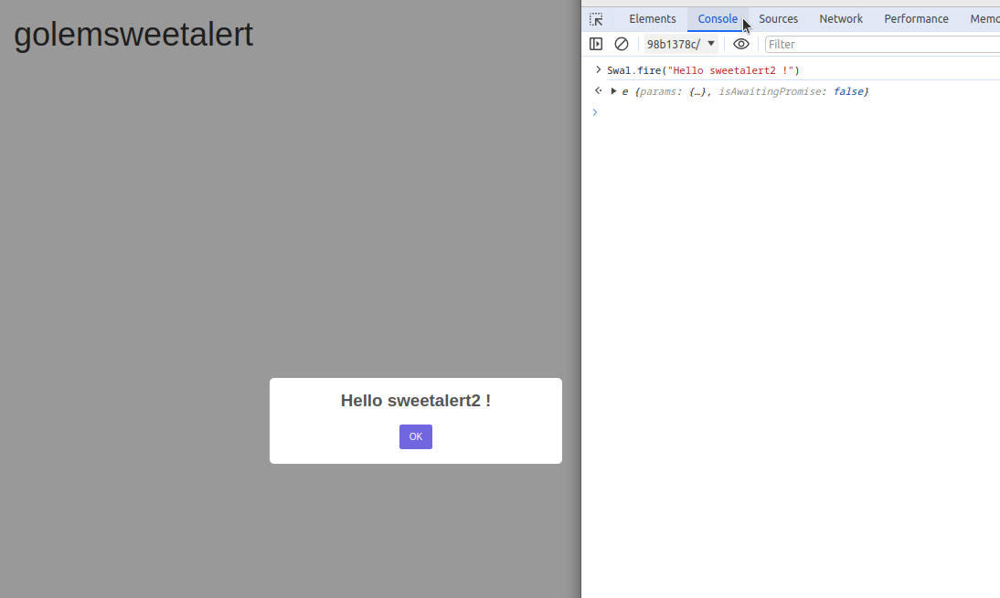
It works! 🎉
How did I know I had to type Swal.fire(" .... ")?
Thanks to the documentation! By going to the sweetalert2 page, we find many examples of using the library. In this case, to display an alert, you have to use the Swal.fire() function. As for learning a new R package, we see that documentation (when it exists …) is of paramount importance for the handling of JavaScript libraries.
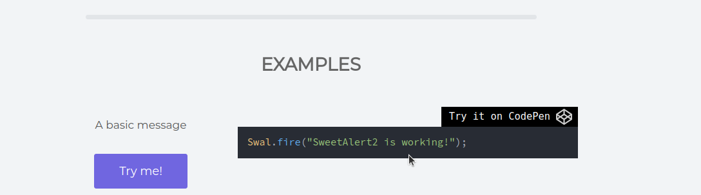
Create a sweetalert2 alert in our {shiny} app
Now that we have imported sweetalert2 into our application and checked that the import went well, we are going to create a function that will allow us to call sweetalert2 from our application.
We are going to try to incorporate the “A title with a text under” alert into our application.
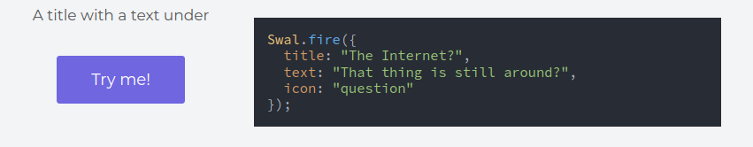
Three elements can be set here: - The title of the alert - The text of the alert - The type of alert (success, error, warning, info, question) and its associated icon
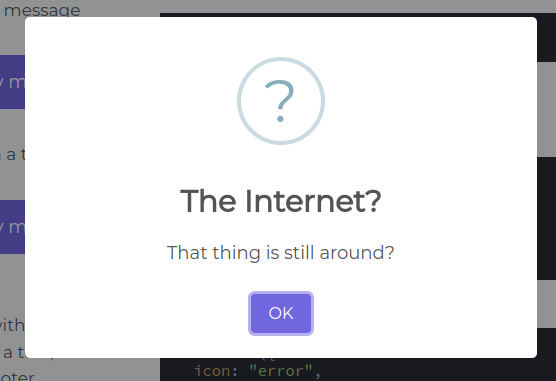
We can easily imagine how to modify these elements directly in the JavaScript code but we don’t know yet how to create this alert via R code. Let’s go!
Create a JavaScript file to call sweetalert2
In order to call sweetalert2 from our application, we are going to create a JavaScript file in which we will write a function that will allow us to create an alert.
Let’s create a inst/app/www/sweet_alert.js file in which we will paste the code to create the alert selected earlier. We could have created this file manually, but we will take advantage of the features offered by {golem} to do so.
Let’s go to the dev/02_dev.R file! We add the following line in the “External Resources” section:
golem::add_js_handler("sweet_alert")The file name doesn’t matter, but it is important to respect the .js extension so that the file is correctly interpreted as JavaScript code. We could have also created subfolders if we had had many imports and files to manage. The only prerequisite is that everything is located in the inst/app/www directory.
We obtain a slightly strange skeleton, which will in fact be the skeleton of a JavaScript function, usable in our {shiny} application:
$( document ).ready(function() {
Shiny.addCustomMessageHandler('fun', function(arg) {
})
});We are going to substitute the term 'fun' with the name of the function we want to call in our {shiny} application and add the code to create the sweetalert2 alert.
We therefore obtain the following code:
$( document ).ready(function() {
Shiny.addCustomMessageHandler('alert_title_and_text_under', function(arg) {
Swal.fire({
title: "The Internet?",
text: "That thing is still around?",
icon: "question"
});
})
});Our parameters “title”, “text” and “icon” are fixed, we need to find a way to make them vary according to the choices of the user. We can notice the existence of a “arg” parameter in the Shiny.addCustomMessageHandler() function. It is this parameter that will allow us to transmit information to our JavaScript function.
Let’s modify our code:
$( document ).ready(function() {
Shiny.addCustomMessageHandler('alert_title_and_text_under', function(arg) {
Swal.fire({
title: arg.title,
text: arg.text,
icon: arg.icon
});
})
});The notation to use here will be arg.parameter_name to access the values transmitted by our {shiny} application. The notation with the “.” is a JavaScript convention for accessing object properties. To make the parallel with R, it’s a bit like if we were doing arg$parameter_name.
Our JavaScript code is ready! Let’s move back to the R side!
What if we tested all this in our {shiny} app (FINALLY!)?
We are going to add a button in the R/app_ui.R file:
app_ui <- function(request) {
tagList(
# Leave this function for adding external resources
golem_add_external_resources(),
# Your application UI logic
fluidPage(
h1("golemsweetalert"),
actionButton(inputId = "show_alert",
label = "Alert demo")
)
)
}On the server side, we add an observeEvent() in the R/app_server.R file, which will call our JavaScript function to generate an alert when the user clicks on the “Alert demo” button.
Once more, {golem} will make our life easier! We will use the golem::invoke_js() function to call our JavaScript function.
Two parameters are passed to golem::invoke_js():
- the first parameter corresponds to the name of the JavaScript function to call
- the second parameter corresponds to a list of parameters, the JavaScript equivalent of our
argobject which will be used to transmit the information necessary to create the sweetalert2 alert. The names used in the list here must correspond to the names used in the JavaScript function for theargparameter (“title”, “text” and “icon”).
app_server <- function(input, output, session) {
# Your application server logic
observeEvent(
input$show_alert,{
golem::invoke_js(
"alert_title_and_text_under",
list(
title = "Title",
text = "Text",
icon = "success"
))
}
)
}We run a call to golem::run_dev() to see our application in action!
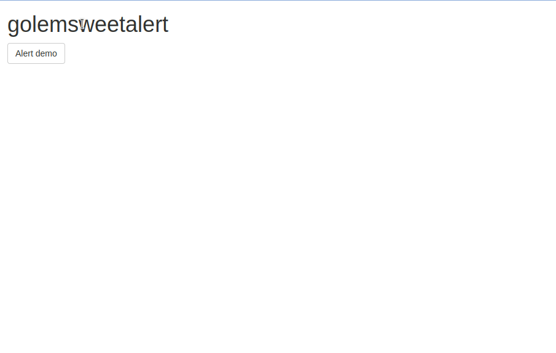
Congratulations! 👏
To make everything more elegant, we can create an R function that will call golem::invoke_js().
Create an R function to call sweetalert2
We are going to go through {golem} to create our function. To do this, we will add the following line in the dev/02_dev.R file of our application:
golem::add_fct("create_alert_title_and_text_under")We obtain a R/fct_create_alert_title_and_text_under.R file in which we will be able to write our function, which will call the JavaScript code created in the previous step.
#' create_alert_title_and_text_under
#'
#' @description Creates an alert with a title, a text and an icon
#' @param title alert title
#' @param text alert text
#' @param icon alert icon
#' @return side effect : creates an alert
#'
#' @noRd
create_alert_title_and_text_under <- function(
title = "Title",
text = "Text",
icon = "success"
) {
golem::invoke_js(
"alert_title_and_text_under",
list(
title = title,
text = text,
icon = icon
)
)
}Let’s modify both the R/app_ui.R and R/app_server.R files to be able to define the parameters of our alert through choices made by the user.
app_ui <- function(request) {
tagList(
# Leave this function for adding external resources
golem_add_external_resources(),
# Your application UI logic
fluidPage(
h1("golemsweetalert"),
textInput(inputId = "title",
label = "title"),
textInput(inputId = "text",
label = "text"),
radioButtons(inputId = "icon",
label = "icon",
choices = c("warning", "error", "success", "info", "question")),
actionButton(inputId = "show_alert",
label = "Alert demo")
)
)
}To define the list of possible “choices” for the radioButtons, we took the possible values for the icon parameter of sweetalert2, as indicated in the official documentation: https://sweetalert2.github.io/#icon.
app_server <- function(input, output, session) {
# Your application server logic
observeEvent(
input$show_alert,{
create_alert_title_and_text_under(
title = input$title,
text = input$text,
icon = input$icon
)
}
)
}Let’s finally call golem::run_dev()!
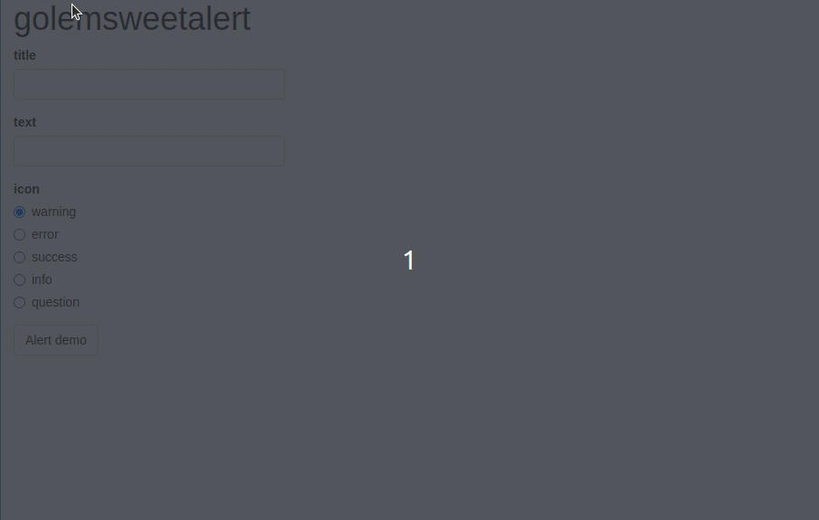
Bravo ! 👏
And a more complex example?
Following the previous steps, it is relatively easy to add additional elements to an alert, such as an image or confirmation / cancellation buttons. A slightly deeper dive into the sweetalert2 documentation will help you understand how to add these elements.
Let’s see what is possible to achieve:
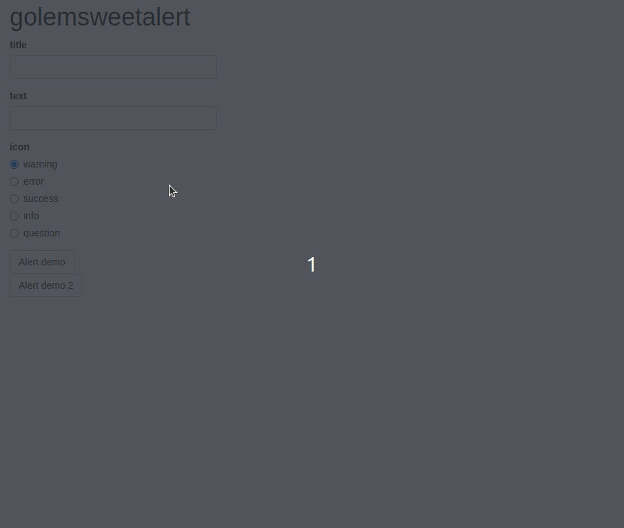
You are curious to know more? Go to this project source code.
Conclusion
- Integrating JavaScript libraries into a {shiny} application is possible!
{golem}makes it easier for us- It is quite easy when the library is well documented
- It is important to read the documentation of the library you want to integrate (but this is also true in R!)
- The browser inspector is a very useful tool to check that everything is going well
- To integrate more complex libraries, minimal JavaScript skills will probably be required
If you want more examples of the use of sweetalert2, but also other JavaScript libraries (Grid.js and Chart.js), you can consult the mycomicslibrary application and take a look at its source code.
Thanks for reading this tutorial and have fun in the wonderful world of JavaScript! 🚀